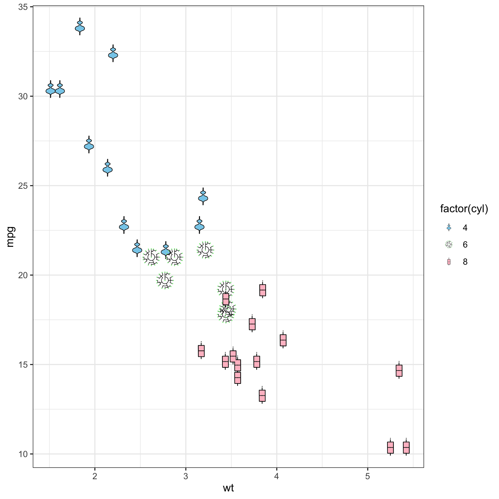

Arbitrary hand-crafted fillable shapes for ggplot2.
New shapes may be feature requested via a Github issue.
Installation
install.packages("ggfoundry")Development version
To get a bug fix, or to use a feature from the development version, you can install ggfoundry from GitHub.
# install.packages("pak")
pak::pak("cgoo4/ggfoundry")Basic example
See the get started vignette and supporting package-website articles for more details, including available shapes, a showcase of examples and how ggfoundry contrasts with alternative strategies.
How much work buys a cappuccino? The Cappuccino Index relates a small cappuccino’s price to a barista’s reported hourly wage. Here, the ten countries with the largest café samples in the data are ordered by the minutes of wages needed to buy a cup. The cup shape is fixed, while its fill varies continuously with the index.
library(ggfoundry)
#> Loading required package: ggplot2
coffee <- read.csv("data-raw/cappuccino/cappuccino_index.csv", fileEncoding = "UTF-8")
coffee <- head(coffee[order(-coffee$n), ], 10)
coffee$country <- reorder(coffee$country, -coffee$index)
ggplot(coffee, aes(index, country, fill = index)) +
geom_segment(aes(x = 0, xend = index, yend = country),
colour = "grey85", linewidth = 0.6) +
geom_casting(shape = "cup", size = 0.135, colour = "#493A30") +
geom_text(aes(label = sprintf("%.1f", index)),
nudge_x = 2.5, hjust = 0, size = 3.5, colour = "#493A30") +
scale_fill_gradient(low = "#EED8B9", high = "#A86135", guide = "none") +
scale_x_continuous(expand = expansion(mult = c(0.01, 0.16))) +
labs(
title = "How much work buys a cappuccino?",
subtitle = "The ten countries with the largest café samples",
x = "Minutes of a barista's wages", y = NULL,
caption = "Source: James Hoffmann / TidyTuesday, 8 September 2026\nSample-based country index; tips excluded."
) +
theme_minimal(base_size = 12) +
theme(panel.grid.major.y = element_blank(),
panel.grid.minor = element_blank(),
plot.title = element_text(face = "bold"),
plot.caption = element_text(hjust = 0))
The cup’s fill follows any continuous variable, without a grouping workaround; the outline colour is set independently. A fixed shape needs no scale_shape_manual(); mapping shape to a variable does, as the vignette’s examples show.